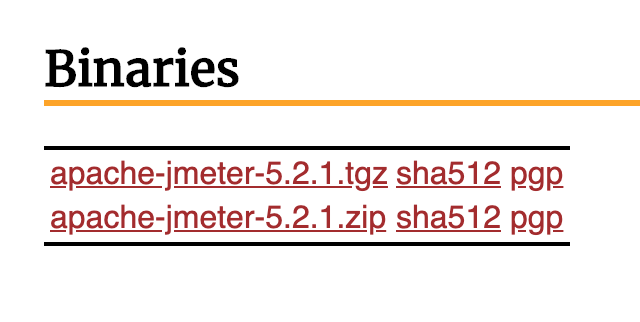

In last week blog we learned about apache and how to install apache webserver on unix base operating system. In this bolg I will be talking about JMeter, what JMeter is and how to install it on your machine.
What is JMeter?
Apache JMeter is a testing tool used for analyzing and measuring the performance of different software services and products. It is a pure Java open source software used for testing Web Application or FTP application.It is used to execute performance testing, load testing and functional testing of web applications. JMeter can also simulate a heavy load on a server by creating tons of virtual concurrent users to web server.
Know that you know what JMeter is, let's move ahead and jump into installation of JMeter.
Since JMeter is based on java, you need to have new version of java on your machine. You can run this command in your command prompt or terminal and check what version you have.
java -version
Download JMeter
Once you get the new version of java you can download apache JMeter by going to this link Link
Download anyone of these.
Once you download the JMeter file, If you are using Windows you can just go to the JMeter /bin file and find for "jmeter.bat" file and it will open the GUI but if you are using linx or mac you will need to cd in to your JMeter file and go to /bin and run this command in your terminal.
sh jmeter.sh
This will open up the Apache JMeter Gui on your system.